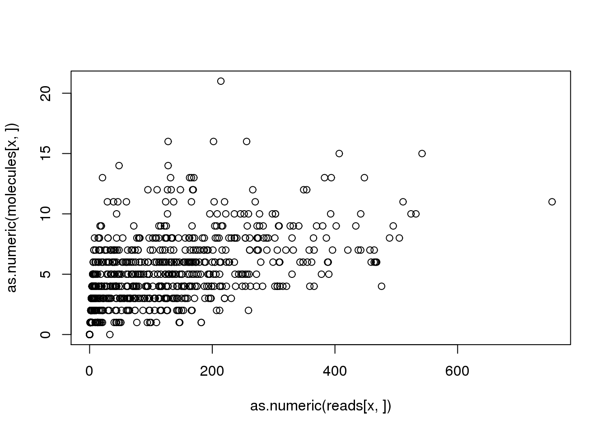

Last updated: 2016-02-19
Code version: a82b08d63e9164bb57307a210fd5ac09189f61f2
After identifying a source of problematic reads and re-running featureCounts using the read2pos flag, the tests still fail. This anaysis explores the remaining bugs lurking in the sequence processsing pipeline.
Input annotation.
anno <- read.table("../data/annotation.txt", header = TRUE,
stringsAsFactors = FALSE)Input read counts.
reads <- read.table("../data/reads.txt", header = TRUE,
stringsAsFactors = FALSE)
stopifnot(ncol(reads) == nrow(anno),
colnames(reads) == anno$sample_id)Input molecule counts.
molecules <- read.table("../data/molecules.txt", header = TRUE,
stringsAsFactors = FALSE)
stopifnot(ncol(molecules) == nrow(anno),
colnames(molecules) == anno$sample_id)Input list of quality single cells.
quality_single_cells <- scan("../data/quality-single-cells.txt",
what = "character")How often is this a problem? How many genes does it affect? For affected genes, how many samples are affected?
discordant_zeros <- (reads == 0) != (molecules == 0)
all_genes <- rowSums(discordant_zeros)
names(all_genes) <- rownames(reads)
problem_genes <- all_genes[all_genes > 0]
length(problem_genes)[1] 13length(problem_genes) / length(all_genes)[1] 0.0007751014summary(problem_genes) Min. 1st Qu. Median Mean 3rd Qu. Max.
1.000 1.000 1.000 1.077 1.000 2.000 This problem affects 13 out of the 16772 total genes (0.08%). For these problem genes, the median number of affected samples is 1 and the max number of affected samples is 2.
Next I identify a problem gene-sample combination so that I can track down what happened.
x <- names(problem_genes)[1]
plot(as.numeric(reads[x, ]), as.numeric(molecules[x, ]))
problem_sample <- colnames(reads)[discordant_zeros[x, ] == TRUE]
reads[x, problem_sample][1] 33molecules[x, problem_sample][1] 0For gene ENSG00000143294, the sample NA19098.r3.E09 was assigned 33 reads but 0 molecules. What happened?
Note that NA19098.r3.E09 is not a high quality single cell, so this particular error has no effect on our downstream results.
problem_sample %in% quality_single_cells[1] FALSENow I am going to search for the bug by inspecting the intermediate data files from the sequence processsing pipeline.
The following chunks are all Bash commands run from the data directory.
opts_chunk$set(engine = "bash")
opts_knit$set(root.dir = "/mnt/gluster/home/jdblischak/ssd")First I confirm that this difference is observed at the featureCounts step:
# reads per lane
grep ENSG00000143294 counts/19098.3.E09*trim.sickle.sorted.genecounts.txt | cut -f1,7counts/19098.3.E09.TCCCATGG.L001.R1.C723YACXX.trim.sickle.sorted.genecounts.txt:ENSG00000143294 11
counts/19098.3.E09.TCCCATGG.L003.R1.C72JMACXX.trim.sickle.sorted.genecounts.txt:ENSG00000143294 13
counts/19098.3.E09.TCCCATGG.L007.R1.C6WYKACXX.trim.sickle.sorted.genecounts.txt:ENSG00000143294 9# molecules per lane
grep ENSG00000143294 counts/19098.3.E09*trim.sickle.sorted.rmdup.genecounts.txt | cut -f1,7counts/19098.3.E09.TCCCATGG.L001.R1.C723YACXX.trim.sickle.sorted.rmdup.genecounts.txt:ENSG00000143294 0
counts/19098.3.E09.TCCCATGG.L003.R1.C72JMACXX.trim.sickle.sorted.rmdup.genecounts.txt:ENSG00000143294 0
counts/19098.3.E09.TCCCATGG.L007.R1.C6WYKACXX.trim.sickle.sorted.rmdup.genecounts.txt:ENSG00000143294 0# molecules per sample
grep ENSG00000143294 counts/19098.3.E09.trim.sickle.sorted.combined.rmdup.genecounts.txt | cut -f1,7ENSG00000143294 0It is. The featureCounts results corroborate that 33 reads are mapped to this sample but zero molecules. Therefore the problem is upstream of my Python script to gather the gene counts.
Next I inspect the featureCounts assigment results (flag -R) to corroborate the output file results. Because all the lanes failed similarly, I’ll focus on the lane with only 9 reads for simplicity.
# reads per lane
grep ENSG00000143294 counts/19098.3.E09.TCCCATGG.L007.R1.C6WYKACXX.trim.sickle.sorted.bam.featureCountsHWI-700819F:303:C6WYKACXX:7:1104:4034:6156:UMI_GTCTGGGG Assigned ENSG00000143294 *
HWI-700819F:303:C6WYKACXX:7:1201:15253:37760:UMI_GTCTGGGG Assigned ENSG00000143294 *
HWI-700819F:303:C6WYKACXX:7:1205:20480:54449:UMI_GTCTGGGG Assigned ENSG00000143294 *
HWI-700819F:303:C6WYKACXX:7:1208:12235:61153:UMI_GTCTGGGG Assigned ENSG00000143294 *
HWI-700819F:303:C6WYKACXX:7:1213:13458:22728:UMI_GTCTGGGG Assigned ENSG00000143294 *
HWI-700819F:303:C6WYKACXX:7:2105:9174:45224:UMI_GTCTGGGG Assigned ENSG00000143294 *
HWI-700819F:303:C6WYKACXX:7:2109:16882:12730:UMI_GTCTGGGG Assigned ENSG00000143294 *
HWI-700819F:303:C6WYKACXX:7:2113:2934:40550:UMI_GTCTGGGG Assigned ENSG00000143294 *
HWI-700819F:303:C6WYKACXX:7:2215:7988:79679:UMI_GTCTGGGG Assigned ENSG00000143294 *All 9 reads have the same UMI sequence.
# molecules per lane
grep ENSG00000143294 counts/19098.3.E09.TCCCATGG.L007.R1.C6WYKACXX.trim.sickle.sorted.rmdup.bam.featureCounts
# I have to add the following to change the exit status. When grep does not find
# a match, its exit status is 1. Since this is an error exit status, knitr
# assumes something has failed and stops execution.
exit 0But no molecules!
Now I want to know if featureCounts reports having seen any of these reads, but does not assign them for some reason (e.g. ambiguity, mapping to more than one feature).
problem_reads=`grep ENSG00000143294 counts/19098.3.E09.TCCCATGG.L007.R1.C6WYKACXX.trim.sickle.sorted.bam.featureCounts | cut -f1`
for read in $problem_reads
do
echo "read: $read"
grep $read counts/19098.3.E09.TCCCATGG.L007.R1.C6WYKACXX.trim.sickle.sorted.rmdup.bam.featureCounts
done
exit 0read: HWI-700819F:303:C6WYKACXX:7:1104:4034:6156:UMI_GTCTGGGG
read: HWI-700819F:303:C6WYKACXX:7:1201:15253:37760:UMI_GTCTGGGG
read: HWI-700819F:303:C6WYKACXX:7:1205:20480:54449:UMI_GTCTGGGG
read: HWI-700819F:303:C6WYKACXX:7:1208:12235:61153:UMI_GTCTGGGG
read: HWI-700819F:303:C6WYKACXX:7:1213:13458:22728:UMI_GTCTGGGG
read: HWI-700819F:303:C6WYKACXX:7:2105:9174:45224:UMI_GTCTGGGG
read: HWI-700819F:303:C6WYKACXX:7:2109:16882:12730:UMI_GTCTGGGG
read: HWI-700819F:303:C6WYKACXX:7:2113:2934:40550:UMI_GTCTGGGG
read: HWI-700819F:303:C6WYKACXX:7:2215:7988:79679:UMI_GTCTGGGGfeatureCounts has no record of having seen any of these reads and then not assigning them. This suggests the problem is upstream. Are any of these reads present in the bam file passed to featureCounts? These are the output files from the step to remove duplicate reads (i.e. convert reads to molecules).
problem_reads=`grep ENSG00000143294 counts/19098.3.E09.TCCCATGG.L007.R1.C6WYKACXX.trim.sickle.sorted.bam.featureCounts | cut -f1`
for read in $problem_reads
do
echo "read: $read"
samtools view bam-rmdup-umi/19098.3.E09.TCCCATGG.L007.R1.C6WYKACXX.trim.sickle.sorted.rmdup.bam | grep $read
done
exit 0read: HWI-700819F:303:C6WYKACXX:7:1104:4034:6156:UMI_GTCTGGGG
read: HWI-700819F:303:C6WYKACXX:7:1201:15253:37760:UMI_GTCTGGGG
read: HWI-700819F:303:C6WYKACXX:7:1205:20480:54449:UMI_GTCTGGGG
read: HWI-700819F:303:C6WYKACXX:7:1208:12235:61153:UMI_GTCTGGGG
read: HWI-700819F:303:C6WYKACXX:7:1213:13458:22728:UMI_GTCTGGGG
read: HWI-700819F:303:C6WYKACXX:7:2105:9174:45224:UMI_GTCTGGGG
read: HWI-700819F:303:C6WYKACXX:7:2109:16882:12730:UMI_GTCTGGGG
read: HWI-700819F:303:C6WYKACXX:7:2113:2934:40550:UMI_GTCTGGGG
read: HWI-700819F:303:C6WYKACXX:7:2215:7988:79679:UMI_GTCTGGGGNothing there either.
This was strange that none of these reads were maintained in the molecules file. I took a closer look at the data directory and realized there was still a bam-dedup-umi directory. I had used that when I was initially testing dedup_umi.py from UMI-tools. Checking the dates, I realized that these files were more recent!
ls -lhS bam-rmdup-umi/*bam | head-rw-r--r-- 1 jdblischak jdblischak 22M Jan 6 12:20 bam-rmdup-umi/19101.3.D02.trim.sickle.sorted.combined.rmdup.bam
-rw-r--r-- 1 jdblischak jdblischak 21M Jan 6 12:17 bam-rmdup-umi/19098.1.F01.trim.sickle.sorted.combined.rmdup.bam
-rw-r--r-- 1 jdblischak jdblischak 20M Jan 6 12:20 bam-rmdup-umi/19101.3.C02.trim.sickle.sorted.combined.rmdup.bam
-rw-r--r-- 1 jdblischak jdblischak 19M Jan 6 12:20 bam-rmdup-umi/19101.3.H04.trim.sickle.sorted.combined.rmdup.bam
-rw-r--r-- 1 jdblischak jdblischak 19M Jan 6 12:20 bam-rmdup-umi/19101.3.G04.trim.sickle.sorted.combined.rmdup.bam
-rw-r--r-- 1 jdblischak jdblischak 19M Jan 6 12:20 bam-rmdup-umi/19101.3.D11.trim.sickle.sorted.combined.rmdup.bam
-rw-r--r-- 1 jdblischak jdblischak 18M Jan 6 12:19 bam-rmdup-umi/19101.2.E08.trim.sickle.sorted.combined.rmdup.bam
-rw-r--r-- 1 jdblischak jdblischak 18M Jan 6 12:20 bam-rmdup-umi/19101.3.B03.trim.sickle.sorted.combined.rmdup.bam
-rw-r--r-- 1 jdblischak jdblischak 18M Jan 6 12:17 bam-rmdup-umi/19098.2.G12.trim.sickle.sorted.combined.rmdup.bam
-rw-r--r-- 1 jdblischak jdblischak 17M Jan 6 12:12 bam-rmdup-umi/19101.3.D02.AGTCCACC.L004.R1.C6WYKACXX.trim.sickle.sorted.rmdup.bamls -lhS bam-dedup-umi/*bam | head-rw-r--r-- 1 jdblischak jdblischak 24M Jan 11 23:13 bam-dedup-umi/19101.3.D02.trim.sickle.sorted.combined.rmdup.bam
-rw-r--r-- 1 jdblischak jdblischak 22M Jan 11 23:08 bam-dedup-umi/19098.1.F01.trim.sickle.sorted.combined.rmdup.bam
-rw-r--r-- 1 jdblischak jdblischak 21M Jan 11 23:13 bam-dedup-umi/19101.3.C02.trim.sickle.sorted.combined.rmdup.bam
-rw-r--r-- 1 jdblischak jdblischak 21M Jan 11 23:14 bam-dedup-umi/19101.3.H04.trim.sickle.sorted.combined.rmdup.bam
-rw-r--r-- 1 jdblischak jdblischak 21M Jan 11 23:14 bam-dedup-umi/19101.3.G04.trim.sickle.sorted.combined.rmdup.bam
-rw-r--r-- 1 jdblischak jdblischak 20M Jan 11 23:12 bam-dedup-umi/19101.2.E08.trim.sickle.sorted.combined.rmdup.bam
-rw-r--r-- 1 jdblischak jdblischak 20M Jan 11 23:14 bam-dedup-umi/19101.3.D11.trim.sickle.sorted.combined.rmdup.bam
-rw-r--r-- 1 jdblischak jdblischak 19M Jan 11 23:13 bam-dedup-umi/19101.3.B03.trim.sickle.sorted.combined.rmdup.bam
-rw-r--r-- 1 jdblischak jdblischak 19M Jan 11 23:02 bam-dedup-umi/19101.3.D02.AGTCCACC.L004.R1.C6WYKACXX.trim.sickle.sorted.rmdup.bam
-rw-r--r-- 1 jdblischak jdblischak 19M Jan 11 23:09 bam-dedup-umi/19098.2.G12.trim.sickle.sorted.combined.rmdup.bamThis is not good! The bam files in bam-dedup-umi are more recent than those in bam-rmdup-umi. It is the files that are in bam-rmdup-umi that get passed to featureCounts. Thus it appears I am passing results from umitools rmdup instead of dedup_umi.py. The creation of the files in bam-dedup-umi on January 11th is consistent with my commit history. I implemented UMI-tools dedup_umi.py in commit 2e024cd on January 12th. I know that the results from these two different methods are not drastically different because I compared results from the two, but perhaps this is what is causing these slight discrepancies.
Looking in bam-dedup-umi, it does contain one of the sequences in the molecule file.
problem_reads=`grep ENSG00000143294 counts/19098.3.E09.TCCCATGG.L007.R1.C6WYKACXX.trim.sickle.sorted.bam.featureCounts | cut -f1`
for read in $problem_reads
do
echo "read: $read"
samtools view bam-dedup-umi/19098.3.E09.TCCCATGG.L007.R1.C6WYKACXX.trim.sickle.sorted.rmdup.bam | grep $read
done
exit 0read: HWI-700819F:303:C6WYKACXX:7:1104:4034:6156:UMI_GTCTGGGG
read: HWI-700819F:303:C6WYKACXX:7:1201:15253:37760:UMI_GTCTGGGG
read: HWI-700819F:303:C6WYKACXX:7:1205:20480:54449:UMI_GTCTGGGG
read: HWI-700819F:303:C6WYKACXX:7:1208:12235:61153:UMI_GTCTGGGG
HWI-700819F:303:C6WYKACXX:7:1208:12235:61153:UMI_GTCTGGGG 0 chr1 156756791 57 6S86M * 0 0 GCAGCTCTTCAGGGACGGAACCAGAGCCGGCTTTCCAGGACGATGCAGCCAATGCCCCCCTTGAATTCAAGATGGCAGCAGGTTCAAGTGGG BFFFFFFIIIIIIIIIIFFFIFIFIIIFIIIFFFFFFFFFFFFFFBFBBFFFBBBB7BBBBBBB0B<<<BBBBBBBBFBFFB0<<0<<00<B HI:i:1 NH:i:1 NM:i:2
read: HWI-700819F:303:C6WYKACXX:7:1213:13458:22728:UMI_GTCTGGGG
read: HWI-700819F:303:C6WYKACXX:7:2105:9174:45224:UMI_GTCTGGGG
read: HWI-700819F:303:C6WYKACXX:7:2109:16882:12730:UMI_GTCTGGGG
read: HWI-700819F:303:C6WYKACXX:7:2113:2934:40550:UMI_GTCTGGGG
read: HWI-700819F:303:C6WYKACXX:7:2215:7988:79679:UMI_GTCTGGGGThere is only one sequence, consistent with collapsing the 9 reads with the same UMI to one molecule. Focusing in on just this one sequence:
samtools view bam-dedup-umi/19098.3.E09.TCCCATGG.L007.R1.C6WYKACXX.trim.sickle.sorted.rmdup.bam | grep HWI-700819F:303:C6WYKACXX:7:1208:12235:61153:UMI_GTCTGGGGHWI-700819F:303:C6WYKACXX:7:1208:12235:61153:UMI_GTCTGGGG 0 chr1 156756791 57 6S86M * 0 0 GCAGCTCTTCAGGGACGGAACCAGAGCCGGCTTTCCAGGACGATGCAGCCAATGCCCCCCTTGAATTCAAGATGGCAGCAGGTTCAAGTGGG BFFFFFFIIIIIIIIIIFFFIFIFIIIFIIIFFFFFFFFFFFFFFBFBBFFFBBBB7BBBBBBB0B<<<BBBBBBBBFBFFB0<<0<<00<B HI:i:1 NH:i:1 NM:i:2Searching this sequence with BLAT, it does map to ENSG00000143294.
My plan is to delete all the de-duplicated files and re-run the de-duplication and gene counting steps. If this doesn’t fix the problem, it will at least make it easier to investigate and diagnose the exact problem.
sessionInfo()R version 3.2.0 (2015-04-16)
Platform: x86_64-unknown-linux-gnu (64-bit)
locale:
[1] LC_CTYPE=en_US.UTF-8 LC_NUMERIC=C
[3] LC_TIME=en_US.UTF-8 LC_COLLATE=en_US.UTF-8
[5] LC_MONETARY=en_US.UTF-8 LC_MESSAGES=en_US.UTF-8
[7] LC_PAPER=en_US.UTF-8 LC_NAME=C
[9] LC_ADDRESS=C LC_TELEPHONE=C
[11] LC_MEASUREMENT=en_US.UTF-8 LC_IDENTIFICATION=C
attached base packages:
[1] stats graphics grDevices utils datasets methods base
other attached packages:
[1] knitr_1.10.5
loaded via a namespace (and not attached):
[1] httr_0.6.1 magrittr_1.5 formatR_1.2 htmltools_0.2.6
[5] tools_3.2.0 RCurl_1.95-4.6 yaml_2.1.13 codetools_0.2-11
[9] rmarkdown_0.6.1 stringi_0.4-1 digest_0.6.8 stringr_1.0.0
[13] bitops_1.0-6 evaluate_0.7